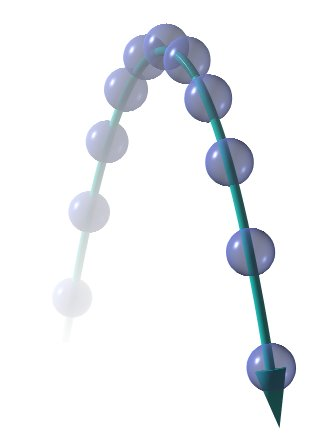

¿QUE ES?

Se denomina movimiento parabólico al movimiento realizado por cualquier objeto cuya trayectoria describe una
parábola, el cual corresponde con la trayectoria ideal de un proyectil que se mueve en un medio que no ofrece
resistencia al avance y que este sujeto a un campo gravitatorio uniforme.